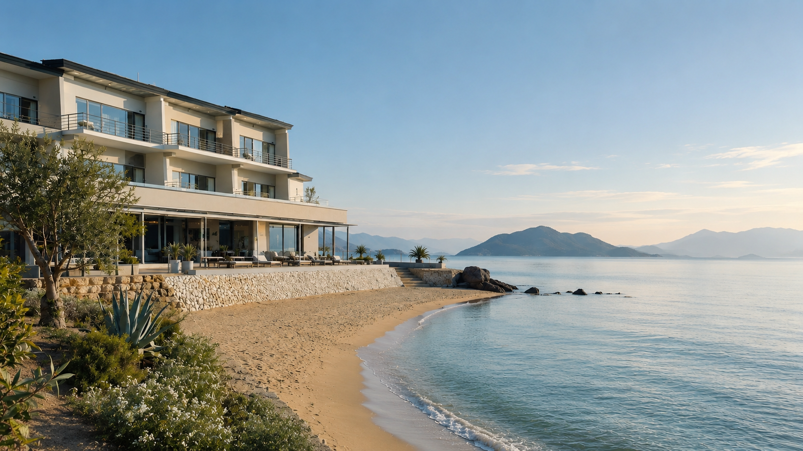
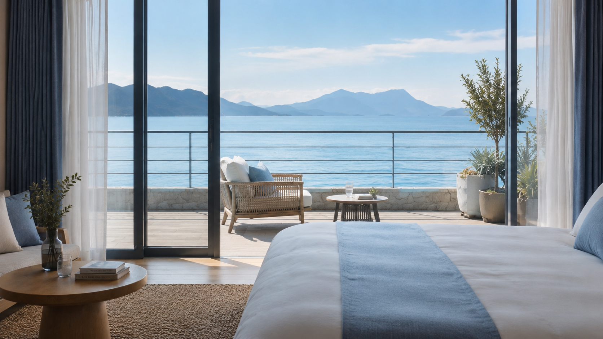
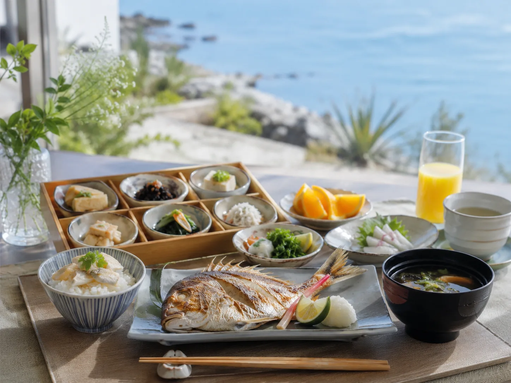
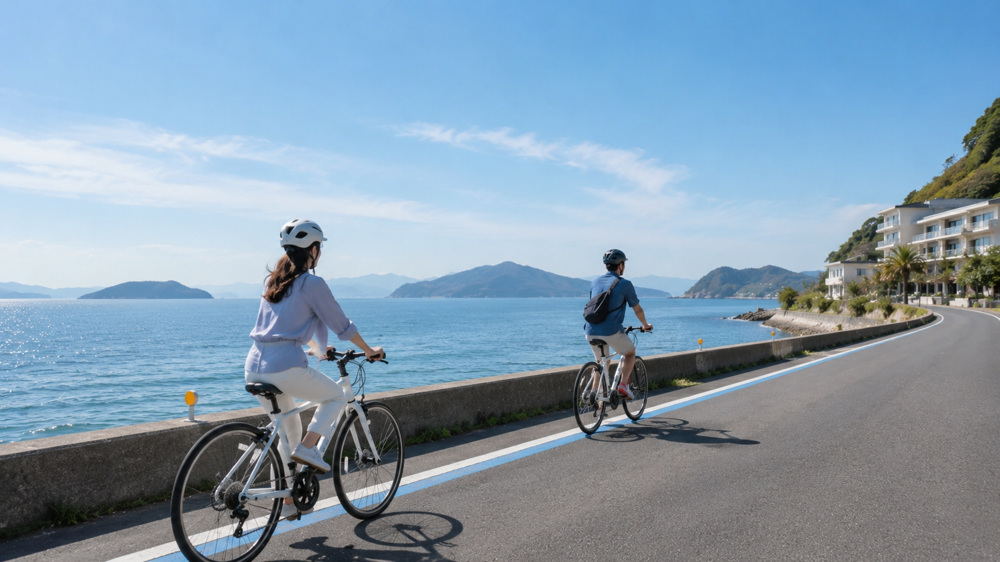
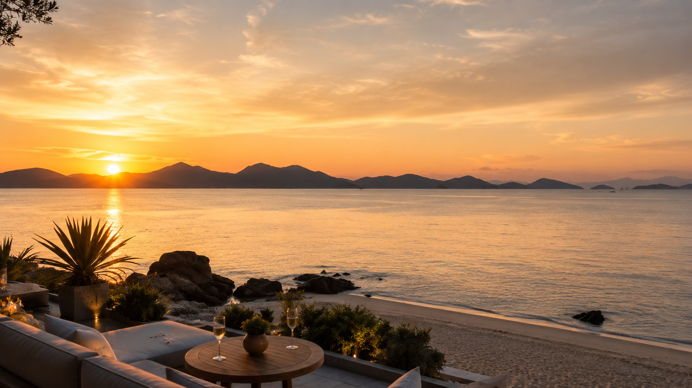
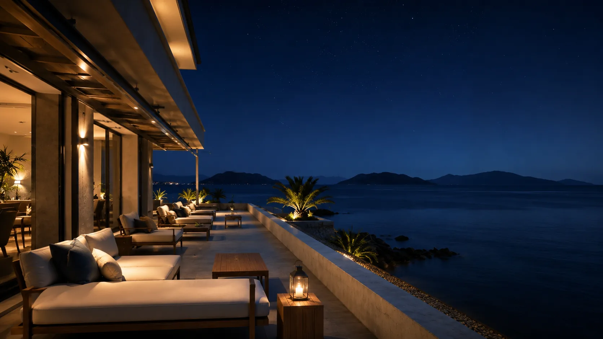
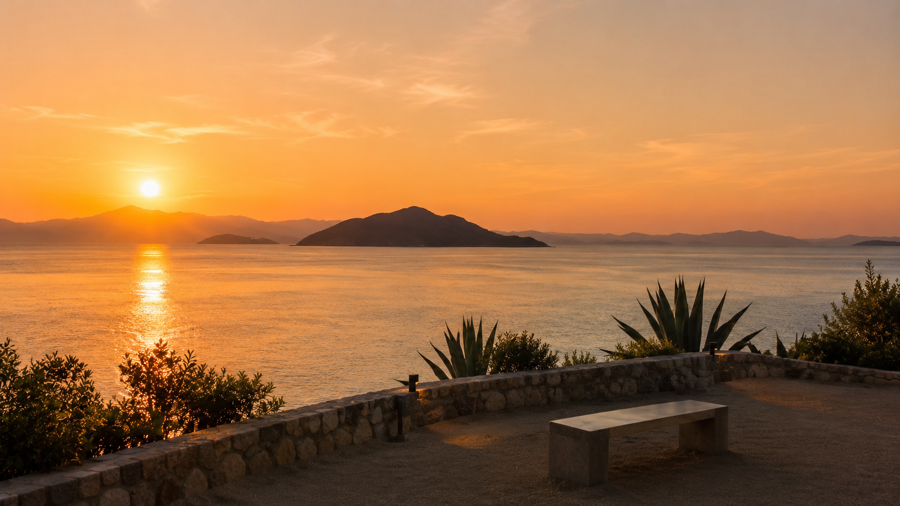

06:30Morning
海辺を、散歩する。
目覚めたら、まず海へ。静かな砂浜を歩き、波音だけが耳に届く朝。人の気配のない時間に、瀬戸内の光を独り占めに。


Stay
何もしない贅沢。瀬戸内の時間の流れに身を委ねる、静かな一日。
A Day
Morning to Night
朝の砂浜から夜のテラスまで。詰め込まない、瀬戸内らしい一日のリズム。
06:30Morning
目覚めたら、まず海へ。静かな砂浜を歩き、波音だけが耳に届く朝。人の気配のない時間に、瀬戸内の光を独り占めに。

08:00Breakfast
海の見えるダイニングで、瀬戸内産の鯛と愛媛の柑橘。和朝食の一皿一皿に、地元の恵みが詰まっています。

10:00Cycle
ホテル前のレンタサイクルに乗り、海沿いの道へ。島へ向かう道も、ホテルで過ごす時間も、旅の一部に。

14:00Afternoon
戻ったら、窓際のチェアへ。本を開くでも、目を閉じるでも。何もしない時間が、ここでは最も贅沢な過ごし方。
17:30Evening
瀬戸内の夕暮れは、言葉にできない美しさ。海岸のスポットか、客室のテラスから。空と海が染まる時間を。

21:00Night
月明かりに照らされた海を見下ろしながら、一日の余韻に浸る。明日のことは、明日考えればいい。

